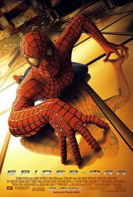

The genetics
Genetic engineering is the origin story. Peter gains his powers from the bite of a genetically modified spider exhibited in a university genetics laboratory, and the film presents the result as a lasting change to his body: overnight his strength and senses are enhanced and he begins to produce web from his own wrists. The film does not explain how a bite could do this, and it works purely as a superhero device. The villain's origin is chemical rather than genetic: Norman Osborn is an industrialist-scientist who tests an untried enhancer on himself under pressure to secure a military contract, and its side effects turn him into a murderous split personality. The two transformations offer a contrast familiar in the genre, between an accidental gift used responsibly and a reckless self-experiment in the service of corporate and military interests. In reality no animal bite can rewrite the genome of an adult's cells, and it is the film's moral, "with great power comes great responsibility", rather than its science that has endured.
How genetics is portrayed
- Overall portrayal of genetics
- neutral Genetics is only the origin device for the hero's powers: the lab is shown factually and plays no further role, and the villain's self-experiment is chemical, not genetic.
- Outcome of the genetic intervention
- positive The engineered spider's bite gives Peter powers that, after Uncle Ben's death, he uses responsibly as Spider-Man, defeating the Goblin and saving Mary Jane and the children.
- Columbia University genetics laboratory
- neutral Aim: not stated (not applicable). The lab created the genetically engineered spiders shown to Peter's school trip; nothing is said about the purpose of the work and the lab carries no moral colouring, as it only supplies the accidental bite. Osborn's enhancer is chemical and is ignored.
The story
On a school trip to a Columbia University genetics laboratory, shy teenager Peter Parker is bitten by a genetically engineered spider. The next day he has spider-like abilities: strength, agility, heightened senses, the ability to cling to walls and organic webbing produced in his wrists. Meanwhile Norman Osborn, head of the company Oscorp and father of Peter's friend Harry, tests a performance-enhancing chemical on himself to win a military contract; it gives him superhuman strength but drives him insane. After Peter lets a thief escape and the same man kills his Uncle Ben, he becomes the masked crime-fighter Spider-Man and sells photos of himself to the Daily Bugle. Osborn, as the Green Goblin, kills Oscorp's board, deduces Peter's identity and targets the people he loves, finally forcing him to choose between saving Mary Jane and a cable car full of children. Peter saves both, and Osborn dies impaled by his own glider. Peter then hides his feelings for Mary Jane to protect her.